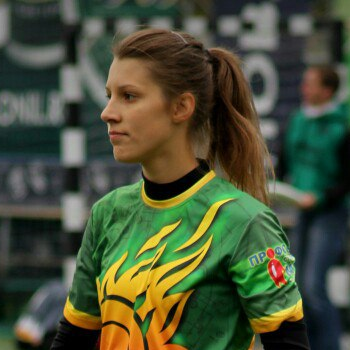

Оплата участия
Дружище, участие в турнире платное. Взнос составляет всего 600 рублей при оплате до 27 ноября и 700 рублей при оплате с 28 ноября по 6 декабря.
Мы очень просим тебя оплатить участие как можно скорее. Это позволит уже сейчас активно заниматься организацией турнира и сделать все как можно лучше и интереснее.
Перевести взнос на карту или отдать лично в руки ты можешь одному из наших организаторов. Пожалуйста, укажи свои ФИО и телефон, если делаешь перевод на карту. Это позволит быстрее подтвердить твое участие.
Реквизиты оплаты
Лидия Ермалюк, директор турнира
Карта Cбербанк: 5469 4000 1482 8466
Карта Райфайзен банк: 5100 6904 7985 0931
Телефон: +7 915 266-99-63
Вконтакте: vk.com/id3544458

Полина Губанова, организатор
28-29 ноября будет здесь: турнир «Запуск», Пущино, команда SorryBro
5-6 декабря будет здесь: турнир «Best2015», Белгород, команда МГТУ-гамма
Телефон: +7 916 114-40-24
Вконтакте: vk.com/id52384189
Как это будет
КАСКА - это ежегодный всероссийский шляпный студенческий турнир по алтимат фрисби*. Мы называем его шляпным, потому что все игроки регистрируются на турнир поодиночке, а затем мы особым случайным образом распределим их по командам. КАСКА это место, где ты сможешь полностью раскрыть свои игровые и спортивные навыки, познакомиться и подружиться с новыми людьми со всей России, научиться работать сообща в новой команде, проявляя лучший Дух Игры** по отношению к игре и всем участникам. КАСКА это драйв, эмоции и атмосфера, которая будет преследовать тебя весь год, это то, что ты будешь вспоминать с друзьями вне зависимости от победы или поражения, это то, что стоит посещать каждый год! Если ты студент, аспирант, работник ВУЗа или учащийся, то смело регистрируйся, ведь места ограничены! *-Алтимат фрисби — это командный неконтактный вид спорта с летающим диском. Цель — передать диск с помощью паса игроку своей команды, находящемуся в зоне противника. **-Отличительной особенностью игры является отсутствие судей и наличие понятия Дух Игры (Spirit of the Game). Коротко его можно обозначить, как «Уважение к сопернику — первостепенно». Правила алтимата строго запрещают намеренные фолы и издёвки над противником. Подобное поведение понимается как отсутствие спортивного мастерства.
Место проведения
Спортивный комплекс МГТУ им.Баумана: Москва, Госпитальная набережная, дом 4, строение 2
Добраться до комплекса можно пешком от станций метро Бауманская и Электрозаводская
Станция Бауманская закрыта. До нее можно добраться от станции Курская на бесплатном автобусе.
Регламент
Время и счет блокирующего
• во время тайм-аута время игры не останавливается
• счет блокирующего игрока до восьми
• в случае неоспоренного нарушения со стороны защиты, счет сбрасывается до единицы
• в случае неоспоренного нарушения со стороны атаки, счет не более чем с шести
• возобновление счета после опротестованного фола, объявленного защитой, максимум шести
• в случае оспоренного "столeаут" счет начинается не более чем с шести
• в случае всех остальных объявлений, возобновление счета производится не более чем с четырех
Ввод диска
• если игрок атакующей команды касается диска до его касания земли, после
чего атакующая команда не может его поймать, это не считается потерей. в
этом случае диск необходимо начинать разыгрывать с точки игрового поля,
ближайшей к месту касания атакующим игроком диска. если диск касается
игрового поля, затем игрок атаки не может его поймать или остановить, то диск
вводится в игру с точки игрового поля, ближайшей к месту касания атакующим
игроком диска. игрок, коснувшийся диска, не обязан начинать розыгрыш.
• если диск сначала касается игрового поля, а затем выходит в аут без контакта
с игроком атакующей команды, то бросающий устанавливает точку опоры в
точке центральной зоны, ближайшей к месту, где диск вышел в аут;
• атакующая команда вправе объявить "брик" (5 метров от передней линии
зоны атакующей команды) в следующих случаях:
в случае, когда диск коснулся центральной части поля и вышел (вылетел
или выкатился) в аут;
в случае, когда диск пролетел над линией центральной части поля ниже
0.5 метра;
в случае, когда диск пролетел над линией игрового поля (не "центральной
части") выше чем 2 метра и затем не вернулся (по воздуху) в пределы
игрового поля;
если выполняется один из предыдущих пунктов, то игрок атаки имеет
право объявить "брик" или начать игру с ближайшей точки от места
выхода диска за пределы игрового поля. во всех остальных случаях игра
начинается с точки игрового поля (не "центральной части"), ближайшей к
точки выхода диска в аут.
если диск вышел в аут (вылетел или выкатился) после "пула", то игрок,
начинающий розыгрыш, должен установить опорную точку в корректном
месте игрового поля и сделать "граундтач" (коснуться диском игрового
поля), прежде чем вводить диск в игру